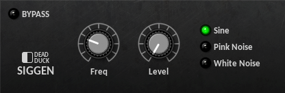
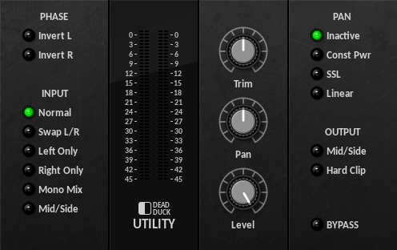

Utilities¶
SigGen¶
A signal-generator with sine, pink noise and white noise outputs.
The following controls are provided:
Output selector - set the output signal to sine, pink noise or white noise.
Freq - set the frequency of the sine output from 20 Hz to 20 kHz.
Level - set the signal output level from -inf to 0 dB.
Utility¶
A multi-function mixing utility.
The following controls are provided:
Phase Selector - invert the phase (polarity) of the left and right channels.
Input Selector - select the input mode (see below).
Trim - adjust the input level from -20 dB to +20 dB.
Pan - set the pan position from 100L to 100R.
Level - set the output level from -inf to 0 dB.
Pan Selector - set the pan mode (see below).
Output Selector - set the output mode (see below).
The signal processing order is as follows:
Phase
Input
Trim
Pan
Level
Output
The input options are:
Unchanged.
Swapped left/right.
The left channel passed to both left/right output channels (right channel ignored).
The right channel passed to both left right output channels (left channel ignored).
Both channels summed to a mono mix and passed to both output channels.
L/R channels converted to mid/side (or mid/side back to L/R).
The pan options are:
Inactive (pan control is bypassed).
Constant Power pan-law (-3 dB cut when centre-panned).
SSL-style pan-law (-4.5 dB cut when centre-panned).
Linear pan-law (-6 dB cut when centre-panned).
The output options are:
Use Mid/Side to change a stereo signal to mid/side or an already converted mid/side signal back to stereo.
Use Hard Clip to prevent excessive output levels by restricting the signal to 0 dB.
The stereo input and output levels are shown by two sets of level meters with input on the left and output on the right.